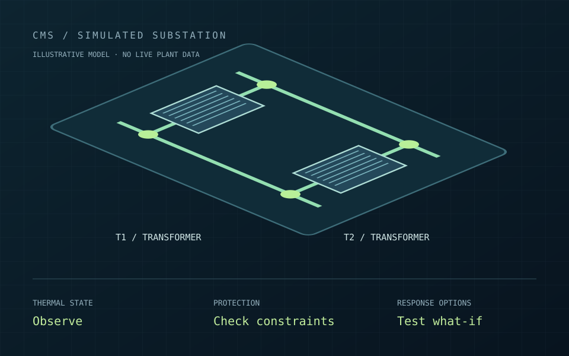
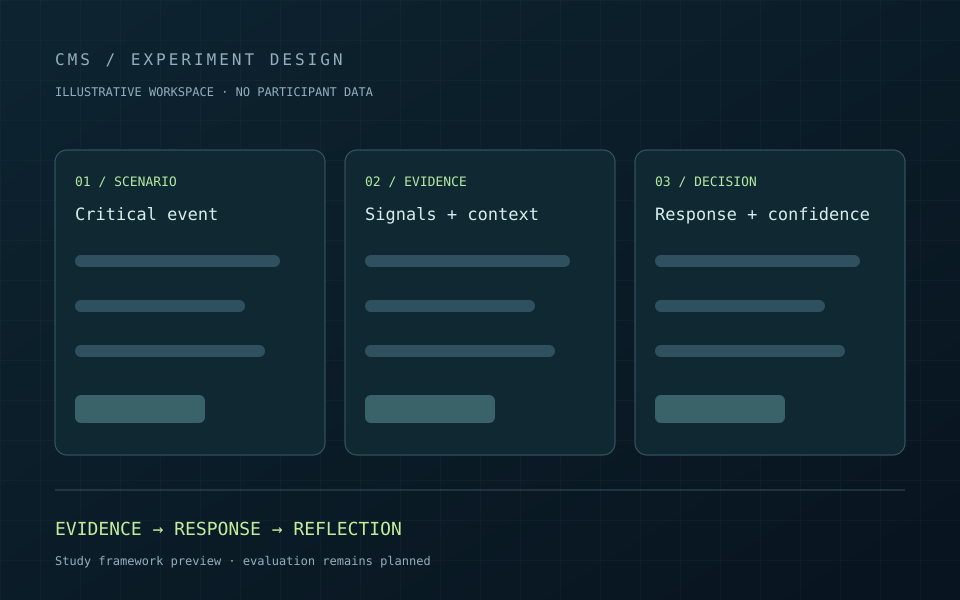

Fire response
Prepare the fire-response workflow.
INDEPENDENT RESEARCH & ENGINEERING / 2026
From scattered signals
to a coordinated response.
I designed the architecture, built the incident-response prototype and created the simulation environment. Now I am investigating how AI can coordinate critical decisions with evidence, checks and accountable authority.
From the first signal to a decision
that can be checked and traced.
Associate observations with the same incident before planning a response.
DESIGNED. BUILT. NOW UNDER INVESTIGATION.
CMS is the thread connecting an engineering prototype, a simulated operating environment and a focused research programme.
A multimodal incident pipeline, retrieved operational context, coordinated response roles, independent checks and an audit trail.
Engineering scope and planned studies.
These are not performance results.
See the environment, the engineering and the research behind CMS.

01 / SIMULATED ENVIRONMENTControl room · transformer bays · evolving fault scenarios

02 / EXPERIMENTAL WORKSPACEEvidence · recommendations · recorded operator decisions
Five architecture layers · eight decision stages · ten response roles
Three planned studies · a proposal · a first manuscript draft
01 / THE STARTING POINT
The response has to cross them too.
My starting point was industrial monitoring and control systems: a physical event could produce alarms in several subsystems, while the evidence and response procedures lived elsewhere.
SCADA might report rising temperature. A camera might show smoke. An operator might report an unusual sound. Maintenance history and switching rules could change which action is appropriate.
I began developing CMS to connect those pieces into a shared incident and a coordinated response: what is happening, what evidence supports it, what should happen next, and who is responsible for the decision.
Move from disconnected observations to a response that can be explained, checked and reviewed.
Incident context · evidence · plan · permissions · audit
02 / FOLLOW THE SYSTEM THROUGH ONE INCIDENT
Use the steps below to follow the same incident from the first observation to the recorded decision. This is an illustrative walkthrough of the workflow.
Temperature is rising, a cooling alarm is active and an operator reports a visual change near T1. CMS associates the observations with a single incident.
A unified incident record with linked observations and timestamps.
FROM THE STORY TO A RUNNING MODEL
Inject a transformer fault. Watch protection change the network, then decide how CMS should respond. Load, temperature, supply and the evidence available to the system evolve together.
Simulation-backed prototype · no connection to physical equipmentCan you coordinate isolation, reserve capacity and suppression before the event escalates?
Explore the response →02 / DEVELOPING FAULTObserve the thermal response and gather an independent view before reviewing an action.
Follow the evidence →03 / CONFLICTING SIGNALSThe plant is healthy. See why a corroboration check can withhold unnecessary switching.
Test the decision →03 / HOW I ORGANISED THE SYSTEM
Each layer answers a different question. Select a layer to see what enters, what it does and what leaves it.
Prepare the fire-response workflow.
Organise dispatch and notifications.
Present switching steps for operator review.
Prepare operational messages.
Organise the relevant alert chain.
Prepare work-order context.
Review topology and load transfer.
Develop rebalancing proposals.
Prepare an incident-report package.
Compile the timeline and lessons.
The ten roles describe the integration design. They do not imply ten independently validated agents or live enterprise and equipment integrations. The current prototype demonstrates the incident-to-decision workflow in simulation.
04 / THE DECISION ALGORITHM
The model can suggest an action early. CMS then asks: what supports it, what is missing, which rules apply, and whose authority is required?
The model proposes a possible response from the initial incident context. That suggestion still needs evidence and independent checks. It does not authorise an action.
Candidate response: investigate overheating and prepare a possible isolation plan for review.
Initial observations and available incident context.
A candidate action and claims that need support.
Candidate-action generation is implemented in the prototype.
Only within the permitted and authorised action class.
Resolve a specific gap in the available evidence.
Bring the decision to the appropriate human authority.
Use the defined fallback when requirements are not met.
candidate = propose(initial_context)
evidence = collect(incident, candidate)
repeat within the allowed evidence-query budget:
evidence = qualify_and_analyse(evidence)
checks = independent_rule_check(candidate, evidence)
if the action violates encoded constraints:
route = ABSTAIN
else if required evidence is missing:
acquire a targeted observation, or ESCALATE / ABSTAIN
else if human authority is required:
route = HUMAN_REVIEW(evidence, candidate, checks)
else:
route = ALLOCATE_USING_VALIDATED_POLICY
audit(evidence, candidate, checks, route)
stop when a final route is determinedConceptual research logic. Calibrated risk, adaptive sufficiency and runtime workload estimation remain research tasks. A rule check establishes admissibility only against the constraints represented in its encoding.
05 / THE RESEARCH QUESTION THAT FOLLOWED
This is where human–AI oversight enters the story.
Building CMS brought a second problem into focus. More conservative checks can create more questions, more approval requests and more handovers to an already busy operator.
My current research asks how to balance machine assurance with the capacity of the person overseeing it. The central goal is to measure that trade-off, then evaluate a policy that allocates decisions using estimated risk and validated workload proxies.
The engineering instrument.
The policy to be tested.
Three linked contributions, with a clear place in the system.
Define which evidence types, freshness, confidence and conflict conditions a decision class requires. Make missing support explicit and determine when a targeted evidence request is needed.
Bounded checker coverage, evidence-sufficiency tests and computational analysis.
Vary checker strictness and observe escalation burden, workload, situation awareness and decision quality across incident classes. Test the relationship rather than assume that stricter always means better overall performance.
Computational sweep and Experiment 3A, informed by Experiments 1 and 2.
Compare a risk-and-workload-adaptive policy with fixed-threshold, always-escalate and risk-only alternatives. Validate the workload proxies and evaluate the policy on held-out scenarios.
Experiment 3B: lower workload and equivalent realised risk within a pre-registered margin.
These are proposed scientific contributions. Multimodal fusion, RAG and graph orchestration provide the engineering foundation; the contribution depends on the specified methods and their evaluation.
Each experiment prepares a part of the main study.
Compare minimal advice, full evidence and a layered presentation. Keep the recommendation and its correctness fixed; the evidence-based and optimised displays use identical evidence content.
Select the interface for the main adaptive-oversight experiment.
MEASURESDecision quality, situation awareness, response time and Raw NASA-TLX.
06 / WHAT I HAVE BUILT & WHAT COMES NEXT
The prototype establishes the workflow. The next stage is rigorous evaluation of the decision process and its effects on people.
Requirements and architecture; multimodal incident processing; operational retrieval; candidate actions with explanations; independent rule checks; approval gates and an audit trace.
A baseline comparison and three study modules, 30 illustrative scenarios, response and confidence recording, time-pressure settings, local records and descriptive analysis. Database-backed storage and measurement coding are being developed.
Refine the protocols and reference judgments, validate workload proxies, complete ethics and pilot preparation, and test the hypotheses with participants.
The scenario count describes the instrument, not completed participant trials. The current materials report no systematic human-subject evaluation or validated performance improvement. AI entries in the retained dashboard may be manual or illustrative.
The Digital Twin Lab now runs illustrative thermal and capacity what-if comparisons. The broader vision adds a richer world model and active evidence acquisition; these remain directions for further research and validation.
Conceptual extension · not a validated physical controller
DEMO PUBLICATION STATUS
The CMS research story and system diagrams are available on this page. The incident replay, Digital Twin Lab and Human–AI Lab are pending a separate publication approval. All demo scenarios are illustrative. For a research walkthrough, contact Fereshteh.
THE MATERIALS BEHIND THE PROJECT
Change the plant, test a response and compare two possible outcomes.
Demo publication status ↗INTERACTIVE PROTOTYPEExplore the current scenario-based test environment.
Demo publication status ↗RESEARCH PROPOSALResearch questions, planned experiments and prototype maturity.
Explore the research ↗RESEARCH BRIEFINGThe project presentation is available for research discussion.
Request the presentation ↗FERESHTEH MARVASTI
M.Sc. Electronic Engineering, with more than ten years of experience across AI, industrial monitoring and distributed software. I am developing CMS toward doctoral research and welcome discussion on critical systems, assurance and adaptive oversight.